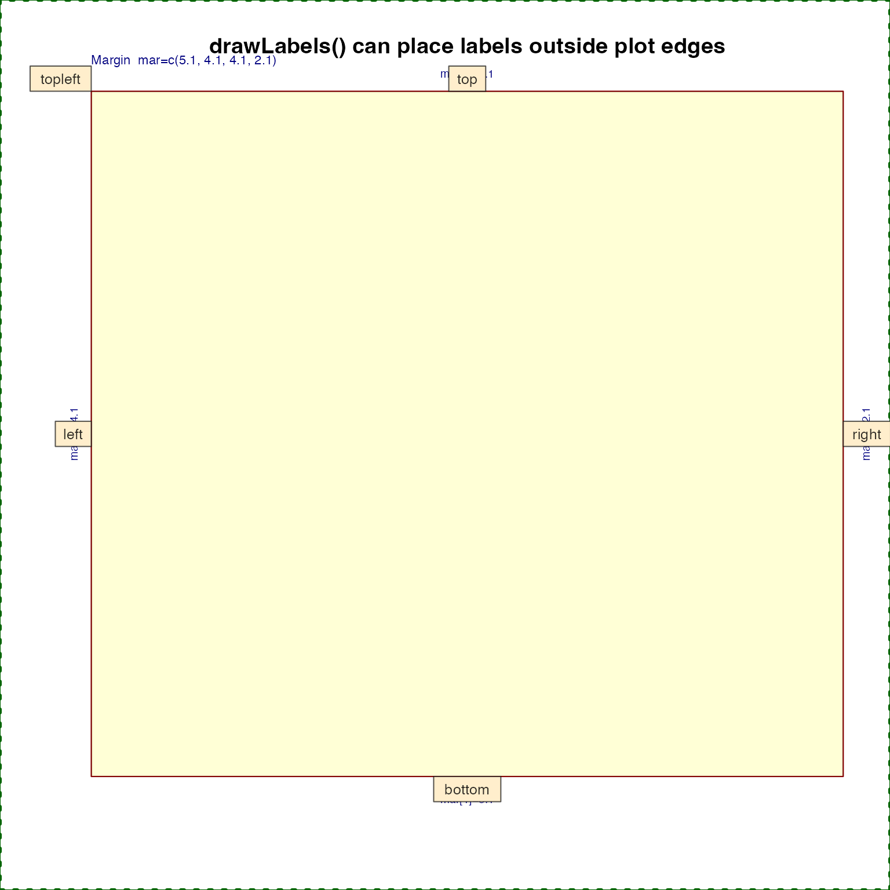
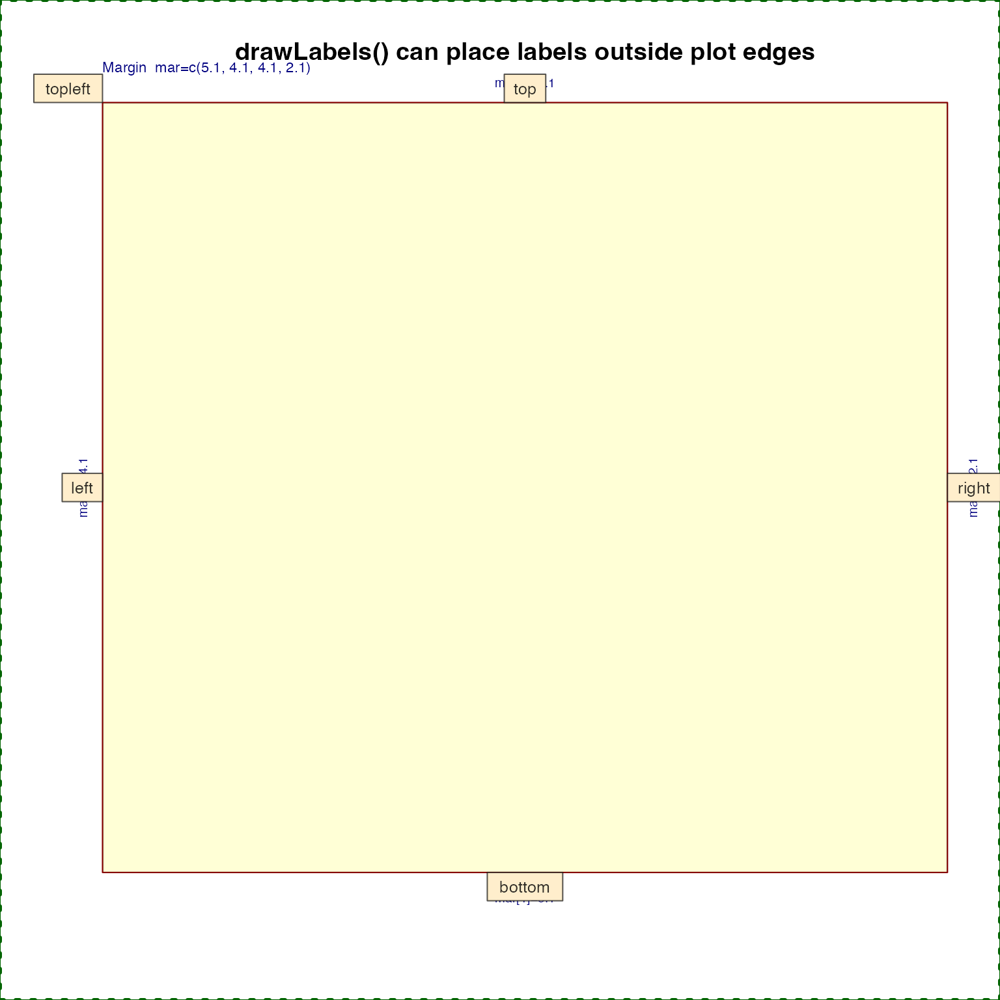

Process coordinate adjustment presets
coordPresets(
preset = "default",
x = 0,
y = 0,
adjPreset = "default",
adjX = 0.5,
adjY = 0.5,
adjOffsetX = 0,
adjOffsetY = 0,
verbose = FALSE,
...
)Arguments
- preset
character vector of coordinate positions, or "default" to use the
x,ycoordinates.- x, y
numeric vectors indicating the default coordinates
x,y.- adjPreset
character vector of text label positions, or "default" to use
preset, or whenpreset="default"theadjX,adjYvalues are used.- adjX, adjY
numeric vectors indicating default text adjustment values, as described for
adjingraphics::text().- adjOffsetX, adjOffsetY
numeric vector used to apply an offset value to the
adjX,adjYvalues, where positive values would place a label farther away from center. Note these units are relative to the text label size, when used withgraphics::text(), larger labels will be adjusted more than smaller labels.- verbose
logical indicating whether to print verbose output.
- ...
additional arguments are ignored.
Value
data.frame after adjustment, where the number of rows
is determined by the longest input argument, with colnames:
x
y
adjX
adjY
preset
adjPreset
Details
This function is intended to be a convenient way to define coordinates using preset terms like "topleft", "bottom", "center".
Similarly, it is intended to help define corresponding text
adjustments, using adj compatible with graphics::text(),
using preset terms like "bottomright", "center".
When preset is "default", the original x,y coordinates
are used. Otherwise the x,y coordinates are defined using the
plot region coordinates, where "left" uses par("usr")[1],
and "top" uses par("usr")[4].
When adjPreset is "default" it will use the preset to
define a reciprocal text placement. For example when preset="topright"
the text placement will be equivalent to adjPreset="bottomleft".
The adjPreset terms "top", "bottom", "right", "left",
and "center" refer to the text label placement relative to
x,y coordinate.
If both preset="default" and adjPreset="default" the original
adjX,adjY values are returned.
The function is vectorized, and uses the longest input argument,
so one can supply a vector of preset and it will return coordinates
and adjustments of length equal to the input preset vector.
The preset value takes priority over the supplied x,y coordinates.
See also
Other jam plot functions:
adjustAxisLabelMargins(),
decideMfrow(),
drawLabels(),
getPlotAspect(),
groupedAxis(),
imageByColors(),
imageDefault(),
minorLogTicksAxis(),
nullPlot(),
plotPolygonDensity(),
plotRidges(),
plotSmoothScatter(),
shadowText(),
showColors(),
smoothScatterJam(),
sqrtAxis(),
usrBox()
Examples
# determine coordinates
presetV <- c("top",
"bottom",
"left",
"right",
"topleft");
cp1 <- coordPresets(preset=presetV);
cp1;
#> x y adjX adjY preset adjPreset
#> 1 0.5 1.0 0.5 1.0 top default
#> 2 0.5 0.0 0.5 0.0 bottom default
#> 3 0.0 0.5 0.0 0.5 left default
#> 4 1.0 0.5 1.0 0.5 right default
#> 5 0.0 1.0 0.0 1.0 topleft default
# make sure to prepare the plot region first
jamba::nullPlot(plotAreaTitle="");
points(cp1$x, cp1$y, pch=20, cex=2, col="red");
# unfortunately graphics::text() does not have vectorized adj
# so it must iterate each row
title(main="text() is not vectorized, text is adjacent to edges")
for (i in seq_along(presetV)) {
text(cp1$x[i], cp1$y[i],
labels=presetV[i],
adj=c(cp1$adjX[i], cp1$adjY[i]));
}
# drawLabels() will be vectorized for unique adj subsets
# and adds a small buffer around text
jamba::nullPlot(plotAreaTitle="");
title(main="drawLabels() is vectorized, includes small buffer")
drawLabels(txt=presetV,
preset=presetV)
 jamba::nullPlot(plotAreaTitle="");
title(main="drawLabels() can place labels outside plot edges")
drawLabels(txt=presetV,
preset=presetV,
adjPreset=presetV)

# drawLabels() is vectorized for example
jamba::nullPlot(plotAreaTitle="");
title(main="Use adjPreset to position labels at a center point")
presetV2 <- c("topleft",
"topright",
"bottomleft",
"bottomright");
cp2 <- coordPresets(preset="center",
adjPreset=presetV2,
adjOffsetX=0.1,
adjOffsetY=0.4);
points(cp2$x,
cp2$y,
pch=20,
cex=2,
col="red");
drawLabels(x=cp2$x,
y=cp2$y,
adjX=cp2$adjX,
adjY=cp2$adjY,
txt=presetV2,
boxCexAdjust=c(1.15,1.6),
labelCex=1.3,
lx=rep(1.5, 4),
ly=rep(1.5, 4))
jamba::nullPlot(plotAreaTitle="");
title(main="drawLabels() can place labels outside plot edges")
drawLabels(txt=presetV,
preset=presetV,
adjPreset=presetV)

# drawLabels() is vectorized for example
jamba::nullPlot(plotAreaTitle="");
title(main="Use adjPreset to position labels at a center point")
presetV2 <- c("topleft",
"topright",
"bottomleft",
"bottomright");
cp2 <- coordPresets(preset="center",
adjPreset=presetV2,
adjOffsetX=0.1,
adjOffsetY=0.4);
points(cp2$x,
cp2$y,
pch=20,
cex=2,
col="red");
drawLabels(x=cp2$x,
y=cp2$y,
adjX=cp2$adjX,
adjY=cp2$adjY,
txt=presetV2,
boxCexAdjust=c(1.15,1.6),
labelCex=1.3,
lx=rep(1.5, 4),
ly=rep(1.5, 4))